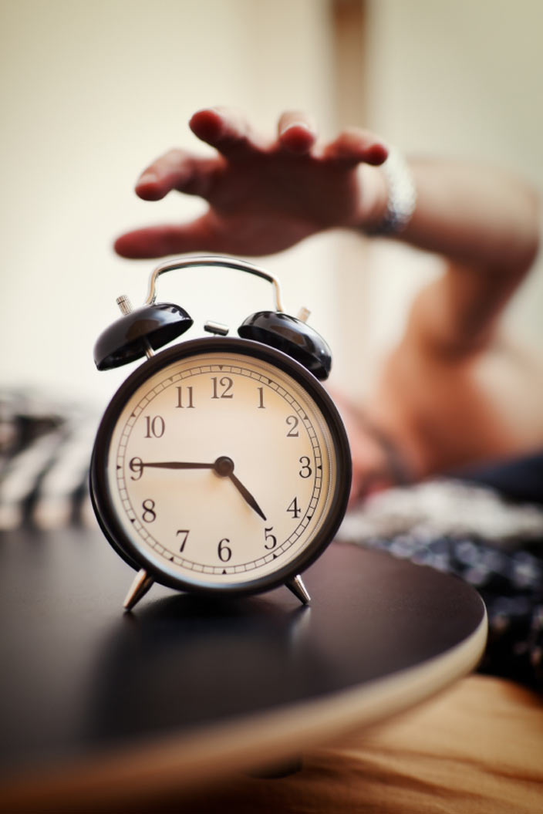
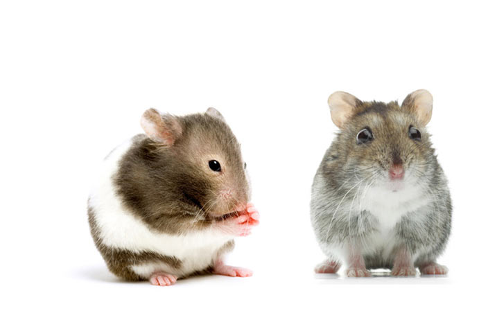
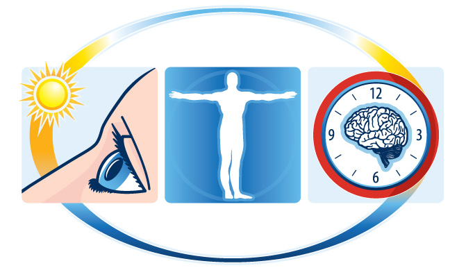
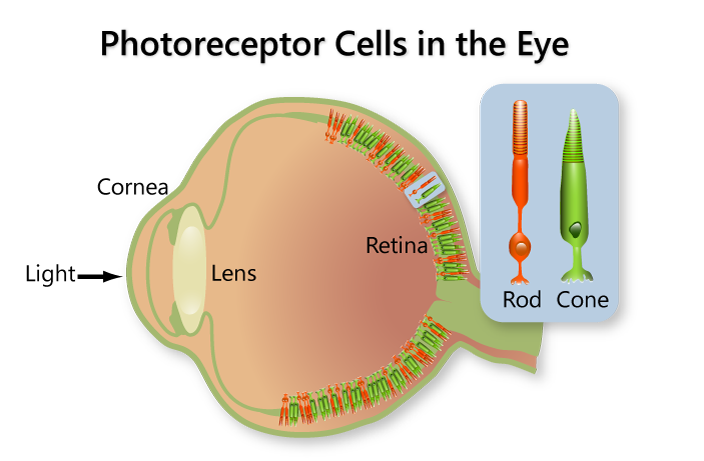

The human circadian rhythm is not exactly 24 hours — it's actually 10 to 20 minutes longer. Other species have circadian rhythms ranging from 22 to 28 hours.
Biological clocks keep working even when organisms are removed from natural light. Without daylight, the biological clock will continue running on its own natural cycle. But as soon as morning light hits the eyes, the clock will reset to match the earth's 24-hour day.


The circadian clock in the hamster brain signals a change in coat color according to season by releasing the hormone melatonin.
A computer simulation suggests competition for food and other resources is most intense among species with 24-hour cycles. If you eat at the same time as everyone else, you're less likely to get your share. Our slightly out-of-sync internal clock may have evolved to help us survive the competition.
Biological clocks also play a role in longer cycles such as hibernation, migrations, and even annual changes in coat and color. When the animal brain records longer days in the spring and shorter days in the fall, it triggers hormone secretion that influences these events.
A biological clock has three parts: a way to receive light, temperature, or other input from the environment; the protein and chemicals that make up the clock itself; and components that help the clock control the activity of other genes.
Sunlight resets the internal biological clock every day, keeping it synchronized with a 24-hour day. If you lived in an underground bunker under constant artificial light, you would continue to follow an approximately 24-hour sleep-wake pattern, but because it is not exactly 24 hours long, your cycle would slowly get out of phase with actual daytime and nighttime.


Rods and cones in the retina of the eye detect light to form visual images. For many years, scientists believed our circadian clock was reset with the help of rhodopsin, a light-detecting protein in the rods and cones. But researchers recently found evidence for a separate light-detection system in the eye. They believe it gauges overall brightness to help reset our internal clock.
This newly discovered system may explain why some blind people and mice lacking rods and cones can still reset their internal clocks and regulate their biological rhythms. A protein named melanopsin — which is sensitive to blue light — is critical for the brightness-detection system. Scientists believe that a small fraction of the eye's light-sensitive "retinal ganglion cells" contain melanopsin and carry signals to the brain's master clock.